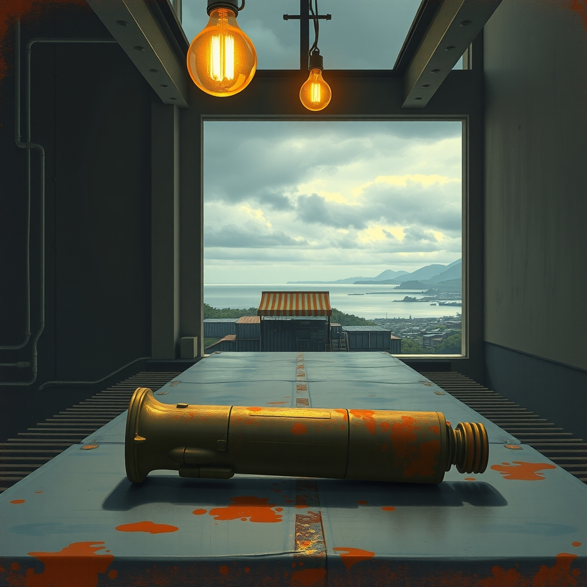
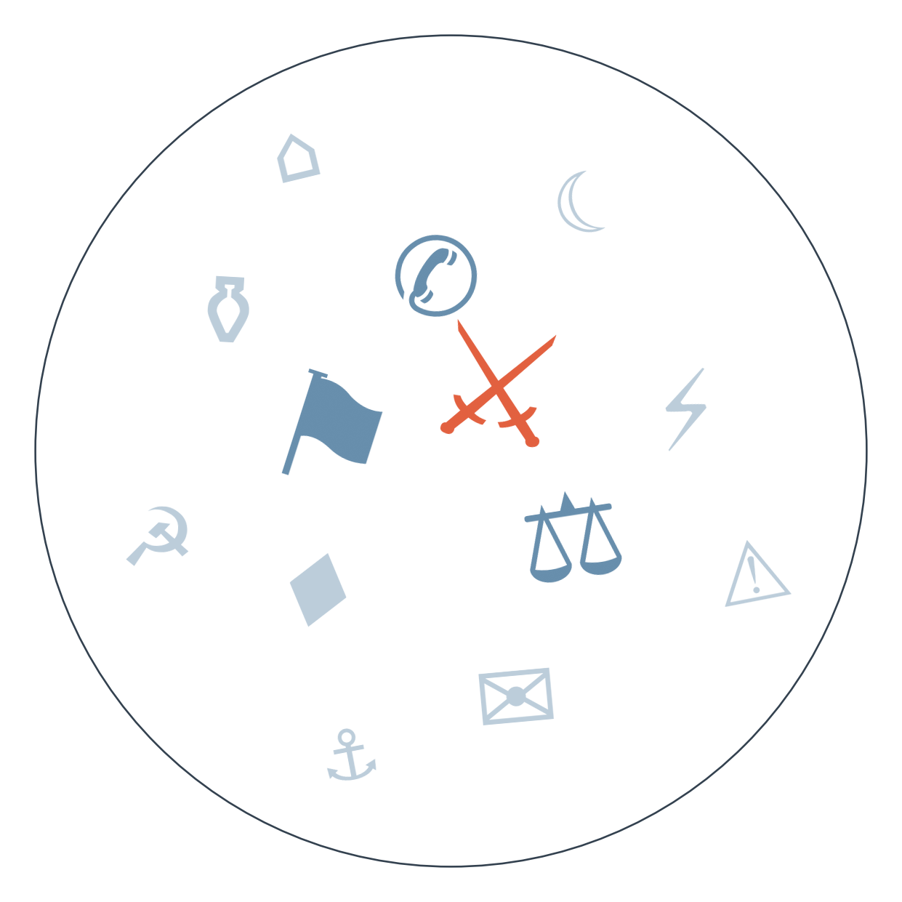

Ранковий бріф · огляд світової преси

Отже, нічна робота команди Reuters дала результат, якого у Вашингтоні не чекали: аналіз уламків показує, що удар по весіллю в іранському Сіріку, найімовірніше, завдав не помилковий, а точний американський боєприпас. Поки що це є тільки в аналізі Reuters, з посиланням на власну експертизу; десятки редакцій, від канадської Globe and Mail до South China Morning Post, просто переказують саме його — а Білому дому тепер складніше говорити про "супутню шкоду" за два місяці до проміжних виборів. ескалація США-Іран в Ормузькій протоці
А тим часом наглядова рада Volkswagen одноголосно затвердила план, який відкладали роками: ще 50 тисяч робочих місць під скорочення, і чотири заводи — Емден, Цвіккау, Ганновер, Неккарзульм — можуть закритися, якщо їм не знайдуть нового навантаження. Це найбільше одноразове скорочення в історії концерну, і воно приходить саме тоді, коли профспілки й так на нервах після перемоги AfD на виборах у Саксонії-Ангальт. деіндустріалізація автопрому Німеччини

Сюжет 1. Спроба саботажу підстанції в Дормагені (Німеччина)
Замовчують: німецькі якісні видання — Der Spiegel, FAZ, Tagesschau — подають подію суто як поліцейське розслідування, без згадки Росії як імовірного замовника, хоча сусіди вже впевнено говорять про російський слід.
Чому розходяться: Литва і Польща, як прифронтові держави, зацікавлені перетворити локальний інцидент на аргумент для нового пакету санкцій і колективного стримування; Москва зацікавлена підважити саму версію, щоб уникнути видворень дипломатів; Швеція, менш вразлива географічно, тримається фактажу без висновків; а Німеччина, яка одночасно розгрібає кризу Volkswagen і чутливі вибори, уникає гострої антиросійської риторики, щоб не додавати собі клопоту напередодні важкого економічного сезону.
Сюжет 2. Розслідування удару по весіллю в Сіріку
Замовчують: іранське державне IRNA передає новину коротким рядком з посиланням на Reuters, без власного коментаря чи вимог — Тегеран, схоже, не хоче загострювати риторику словами, поки триває економічна війна.
Чому розходяться: тут ідеться радше про варіацію акценту, ніж про справжній розкол позицій — усі згадані редакції по суті погоджуються з фактажем Reuters і не заперечують версію про точний удар. Канада тримає фокус на внутрішньоамериканській політиці, бо для її аудиторії головне — куди веде президентура Трампа; гонконгське видання уникає прямих оцінок, балансуючи між США і Китаєм; індійська редакція цитує Трампа буквально, бо для індійського читача важливіша сама позиція Вашингтона щодо війни, яка тисне на ціни нафти; південноафриканське видання просто ретранслює Reuters, не маючи власного кореспондента в темі.
Пошкоджена підстанція в Німеччині, знайдено пускові установки і підозрюваних зі зв'язками з РФ → данська розвідка попереджає про вербування посередників для диверсій проти оборонпрому Скандинавії → нова спроба саботажу підстанції в Дормагені і заклик Польщі видворити більше російських дипломатів → веде до нового пакету санкцій ЄС або посилення контррозвідки цієї осені.
Нічний удар США по цілях біля Ормузької протоки влучив по весіллю в Сіріку → Іран відповів ударами по базах США в Кувейті, постраждав танкер третьої країни → аналіз Reuters підтверджує пряме влучання американського боєприпасу, зростає тиск на Трампа перед проміжними виборами → веде до можливого слухання в Конгресі США щодо цього удару або нового обміну ударами.
Volkswagen раніше погодив закриття кількох заводів у межах програми економії → перемога AfD на виборах у Саксонії-Ангальт підвищує нервозність профспілок → наглядова рада одноголосно затвердила скорочення ще 50 тисяч робочих місць і поставила під загрозу чотири заводи → веде до нової хвилі напруги з профспілками цієї осені.
Нафта Brent прямує до найбільшого тижневого приросту на тлі Ормузької кризи; за неофіційними оцінками британських страховиків, збитки від війни США та Ізраїлю проти Ірану становлять близько 1,9 млрд доларів.
Nvidia, за повідомленнями фінансових ЗМІ, купує стартап Hugging Face за 12,93 млрд доларів — одна з найбільших угод у сфері штучного інтелекту цього року.
Ф'ючерси на природний газ у Європі зросли до найвищого рівня з 2023 року.
В Аргентині програма бюджетної економії Мілея, за оцінкою місцевих економістів, наближається до межі можливого перед перевіркою МВФ.
Поки Reuters і якісна преса розбирають, чий саме боєприпас влучив по весіллю в Ірані, а Der Spiegel стримано пише про "спробу саботажу" підстанції, Daily Mail віддає першу шпальту обіцянці Фараджа "зупинити човни за 100 днів" і сукні Кендалл Дженнер у Венеції. Bild натомість подає саму диверсію в Північному Рейні-Вестфалії на диво тверезо — без жодного гороскопа поруч, хоча гороскопи на тому ж сайті нікуди не зникли.
Дипломатія навколо завершення війни лишається на місці: Кремль повторює, що тристоронній саміт Путін-Трамп-Зеленський можливий лише "для фіксації" вже узгодженого результату, а не для самих перемовин. Орієнтир, коли стане ясно, відбудеться він чи ні, — 16 вересня.
Тим часом усередині ЄС не вщухає розкол: міністри оборони блоку відмовилися відкрити запаси Patriot для України, водночас обійшли санкції проти Ізраїлю. На столі лишається ідея виділити мільярди на перехоплювачі PAC-3 для України, але рішення поки не ухвалене.
Дев'ять років по вбивству мальтійської журналістки Дафни Каруани Галізії суд виправдав останнього фігуранта справи — і питання, хто саме замовив вбивство, лишається без відповіді. Голова Європарламенту Метсола пообіцяла "не здаватися", але жодних нових слідчих дій наразі не анонсовано.
У Нігері безвісти зник журналіст Мусса Кака на тлі хвилі арештів після спроби перевороту — обставини зникнення влада не коментує.
Гімалайська повінь забрала понад тисячу життів, але Пекін і досі не публікує окрему статистику жертв для Тибетського автономного району — цифра, якої офіційно ніби не існує.
Похорон Ратка Младича з військовими почестями запланований орієнтовно на 10 вересня; Хорватія вже погрожує заблокувати вступ Сербії до ЄС, якщо церемонія відбудеться в такому форматі.
Нафтова угода США і Венесуели, яку Трамп назвав "найбільшою в історії", досі не розкрита в деталях; сам Мадуро, за наявними відомостями, помітно схуд у в'язниці.
ФРС підходить до засідання FOMC 12 вересня на тлі попереджень Бессента і Уорша про ризики розпродажу японських активів.
ЄК готує додаткові вимоги до Meta понад уже узгоджену угоду на 17,1 млрд доларів, оприлюднення очікується 11 вересня.
Росія формально лишається поза столом G20 і під санкціями — жодних сигналів про зміну цього статусу поки немає.
📊 ПРОГНОЗИ
Рахунок: 1 з 3 (базово 1 з 3) — референдум в Ісландії не справдився, дата похорону короля Норвегії справдилась достроково, спільна заява на ШОС щодо війни в Україні чи санкцій не прозвучала.
Демократи Палати представників внесуть законопроект-протидію перейменуванню Lake Ontario на "Lake America" — 60% (базово 50%), горизонт 8 вересня.
Сербія проведе державний похорон Ратка Младича з військовими почестями попри протести правозахисників і критику ЄС — 55% (базово 60%), горизонт 10 вересня.
ФРС на засіданні FOMC підвищить ставку, попри те що це не є базовим сценарієм — 35% (базово 20%), горизонт 12 вересня.
Німеччина оголосить додаткові санкції проти Росії понад закриття консульства в Бонні — 60% (базово 50%), горизонт 5 вересня.
США та Іран проведуть ще один прямий обмін ударами — 55% (базово 45%), горизонт 16 вересня.
Тристоронній саміт Путін-Трамп-Зеленський не відбудеться — 75% (базово 70%), горизонт 16 вересня.
ЄС ухвалить продовження санкцій проти Росії попри блокаду Словаччини — 65% (базово 55%), горизонт 17 вересня.
Саудівська Аравія офіційно звернеться до Ради Безпеки ООН щодо удару по своєму танкеру — 45% (базово 25%), горизонт 10 вересня.
Уряд Естонії оголосить кадрові чи процедурні зміни в оборонному відомстві після відставки міністра — 55% (базово 35%), горизонт 17 вересня.
Профспілка IG Metall організує масштабні протести проти плану скорочення 50 тисяч робочих місць у Volkswagen — 55% (базово 40%), горизонт 18 вересня.
Конгрес США відкриє офіційне слухання щодо удару по весіллю в Ірані на тлі тиску перед проміжними виборами — 40% (базово 25%), горизонт 18 вересня.
Південна Корея ухвалить остаточне рішення про розгортання військових активів у Ормузькій протоці — 50% (базово 35%), горизонт 18 вересня.
📅 ЩО ПОПЕРЕДУ
5 вересня: можливе оголошення нових німецьких санкцій проти Росії.
8 вересня: дедлайн для законопроекту демократів щодо Lake Ontario.
10 вересня: похорон Ратка Младича та можлива реакція Хорватії; дедлайн для звернення Саудівської Аравії до РБ ООН.
11 вересня: ЄК оприлюднює додаткові вимоги до Meta.
12 вересня: засідання FOMC щодо ставки.
16 вересня: горизонт для тристороннього саміту й можливого нового обміну ударами США-Іран.
17 вересня: голосування ЄС щодо продовження санкцій проти Росії; дедлайн для рішення Естонії щодо оборонного відомства.
18 вересня: можливі протести IG Metall, слухання в Конгресі США щодо удару по весіллю в Ірані, рішення Південної Кореї щодо Ормузької протоки.
Базова лінія у прогнозах. Відсоток «базово» — це ймовірність події за інерцією, якщо ніхто нічого не робитиме й нічого не зміниться. Друге число — наша впевненість. Прогноз має сенс лише тоді, коли ці числа розходяться: збіг означає, що ми просто описали поточний стан.
Відсотки в карті уваги. Частка країни в денному обсязі зібраних матеріалів. Не показник важливості події, а показник того, скільки місця країна зайняла в новинному потоці за добу. Різкий стрибок частки зазвичай означає, що в країні щось відбувається.